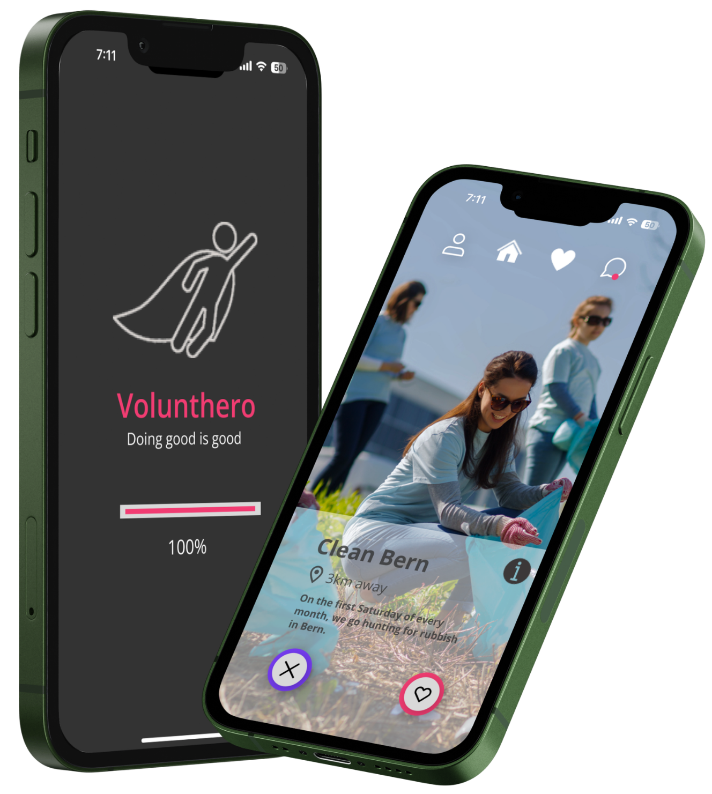
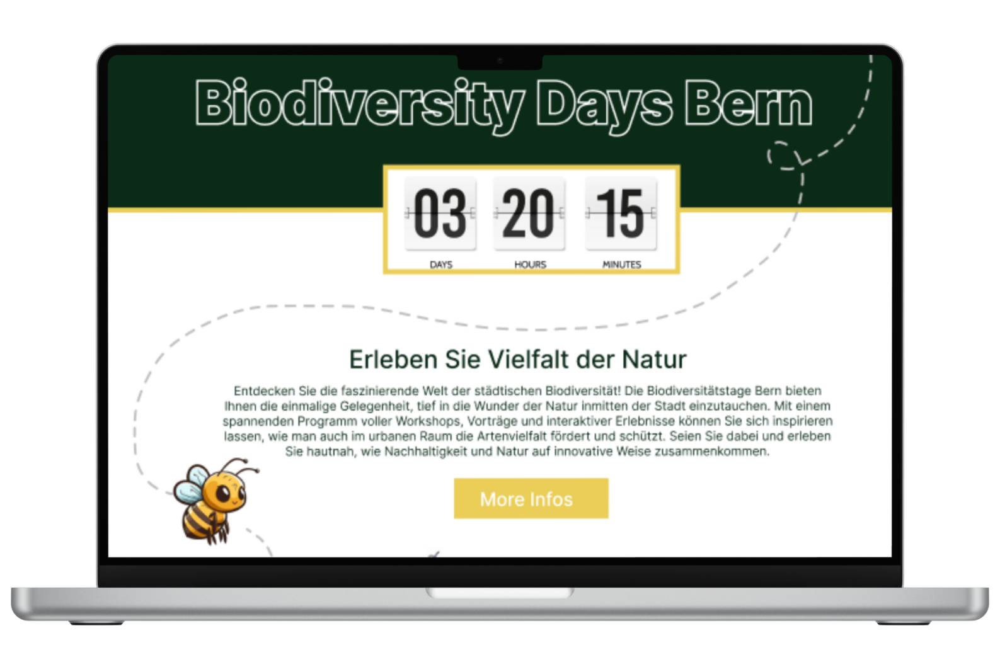

Ich verbinde Struktur mit Kreativität, Strategie mit Design und Technik mit Menschen. Als Wirtschaftsinformatikerin interessiere ich mich für die Schnittstelle von digitalen Systemen, Prozessen und Gestaltung. Ich analysiere, strukturiere und entwickle Lösungen, die komplexe Zusammenhänge verständlich und nutzbar machen.
Geburtsdatum: 29.12.2001
Heimatort: Tschugg BE
Nationalität: Schweiz
Familienstand: Ledig
Führerschein: Kategorie B
Deutsch: Muttersprache
Englisch: Niveau B2 (zertifiziert)
Französisch: Niveau B1 (zertifiziert)
ECDL Base Certificate
ECDL Standard Certificate
ECDL Advanced Presentation
ECDL Advanced Word
Certificate Intermediate (CEFR B1)
Certificate de Stage Le Landeron

HTML
CSS
SQL
TypeScript
Python
R
APIs
Datenanalyse & Datenmanagement
Softwareentwicklung
Web Engineering
KI
Figma
Canva
Adobe Tools
Visual Studio Code
SharePoint
Abacus
Volta
CMI Axioma
Innosolv
ERP-Systeme
StarUML
Business Information Systems
Requirements Engineering
Prozessmanagement
Design Thinking
UI & UX
Wireframes & Mockups
Content Strategie
Branding
Nachhaltige Unternehmensstrategien
Scrum
HERMES
Agiles Projektmanagement
Klassisches Projektmanagement
Hybrides Projektmanagement
Strukturierte Arbeitsweise
Problemlösungskompetenz
Kommunikationsfähigkeit
Teamarbeit
Kreativität
Lernbereitschaft
Eigeninitiative

Volunthero ist ein Plattformkonzept, das Menschen mit freiwilligen Projekten verbindet und Organisationen dabei unterstützt, schnell passende Helfer zu finden.

NestFinder ist ein App-Konzept, das Menschen dabei unterstützt, den idealen Wohnort basierend auf Lebensqualitätsfaktoren wie Infrastruktur, Umwelt und Mobilität zu finden.

Biodiversity Days Bern ist ein Website-Konzept, das Veranstaltungen und Informationen rund um Biodiversität, Natur und Nachhaltigkeit verständlich und ansprechend präsentiert.

Beschreibung deines Branding-Projekts.

Beschreibung deines Social Media-Projekts.
Hier sind ein paar kleine API-Integrationen. Nicht unbedingt lebensverändernd, aber technisch spannend und vor allem der Beweis, dass ich es geschafft habe, externe Daten in meine Website einzubauen.
Standort wird ermittelt...
Hier findest du die aktuellen Wetterdaten in deiner Region:
Or play Unicorn Escape